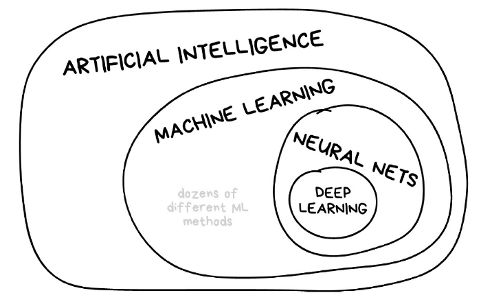
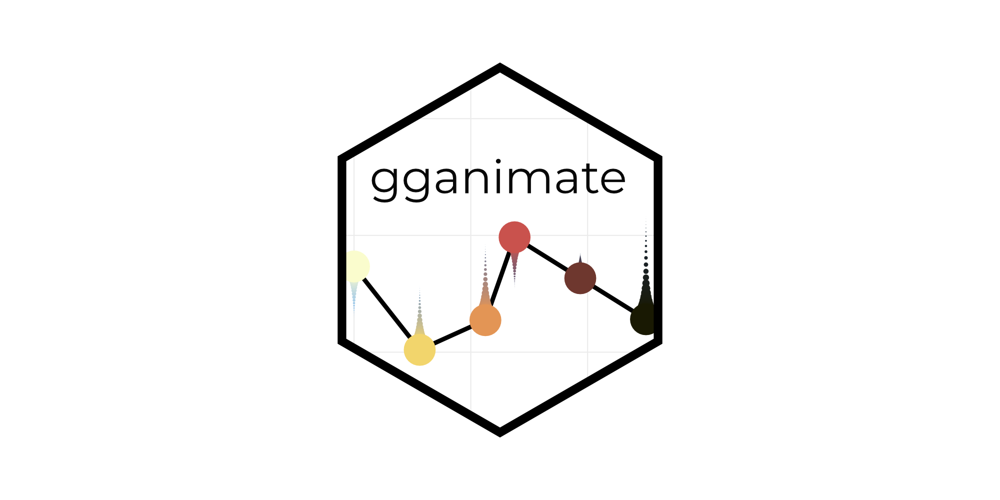

How can we get better performance from our deep learning model?In this article, we look at the potential performance optimizations that we can make when building the stages of a deep learning pipelines in TensorFlow.
The optimizations related to data preparation, reading, and augmentation.

Tree based algorithms are considered to be one of the best and mostly used supervised learning methods, and empower predictive models with high accuracy, stability and ease of interpretation.
This guide gives us an overview of tree-based machine learning methods.

Machine learning algorithms are mathematical model mapping methods used to learn or uncover underlying patterns embedded in the data to make predictions.
This guide gives an overview of the commonly used ML algorithms.

The evolution of deep learning has attracted the attention of industry specialists and tech giants. Deep learning technology is an integral part of global industries.
We demystify deep learning by reviewing some of the commonly used basic concepts in the article.

A Convolutional Neural Network (CNN/ConvNet) is a class of deep neural networks, most commonly applied to analyze visual imagery.
This article examinines the advancements of CNN architecture over the past few years
Kenyans On Twitter(KOT) took to twitter to express their dissatisfaction with the poor service delivery by the Kenya power utility firm.
In order to have a better understanding of the problems Kenyans are facing while using the power utility services, we used the Rtweet package to collect and analyze their twitter complaints.

Animating data is like breathing life into dust, it’s an act of creation.
This articles guides us on how to create visually appealing and engaging animations using R package gganimate.
While skills are essential in becoming a Data Scientist, that is not all you need to know.
In this article we delve into the fundamentals of not only becoming a better Data Scientist
but a holistic one.